Research
Fundamental Research
Applications
Industry Partnerships
People
People
Pavle Radovanovic
Pavle Radovanovic
Honors and Awards
Invited Talks
Teaching
Current Group Members
Group Alumni
Publications
Publications
Patents
Facilities
Press
Outreach
Contact Us
Research
Fundamental Research
Applications
Industry Partnerships
People
People
Pavle Radovanovic
Pavle Radovanovic
Honors and Awards
Invited Talks
Teaching
Current Group Members
Group Alumni
Publications
Publications
Patents
Facilities
Press
Outreach
Contact Us
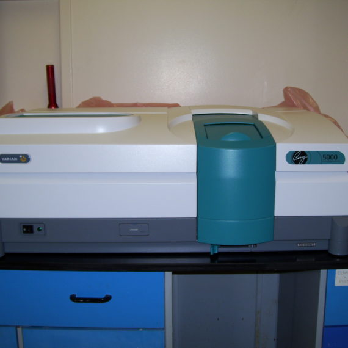
Cary 5000 UV-vis-NIR spectrophotometer
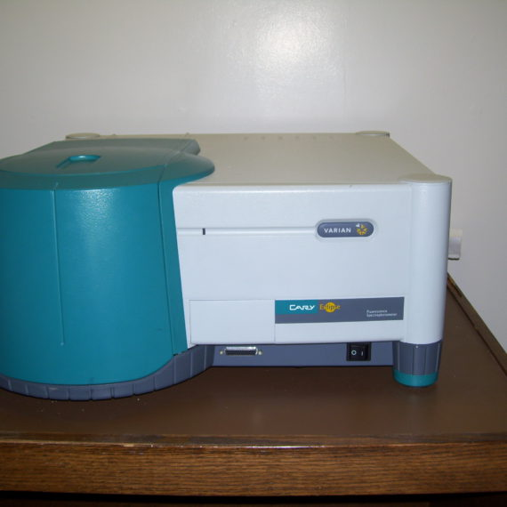
Cary Eclipse spectrofluorimeter
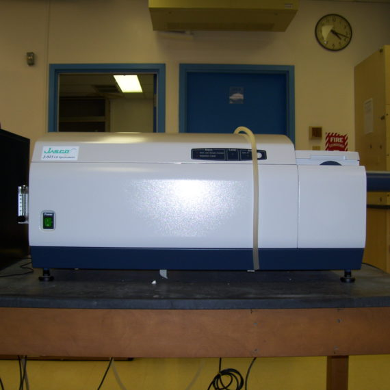
Jasco J-815 spectropolarimeter
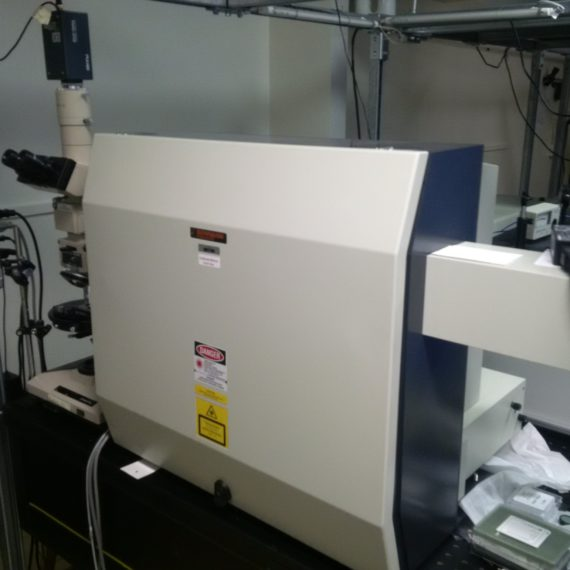
Confocal Raman/ photoluminescence microscope
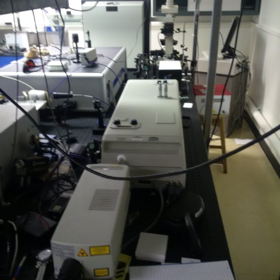
Millenia-pumped Tsunami femtosecond laser system
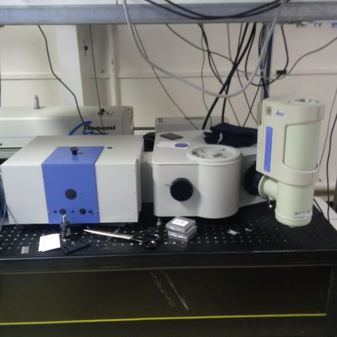
Time correlated single photon counting (TCSPC) system
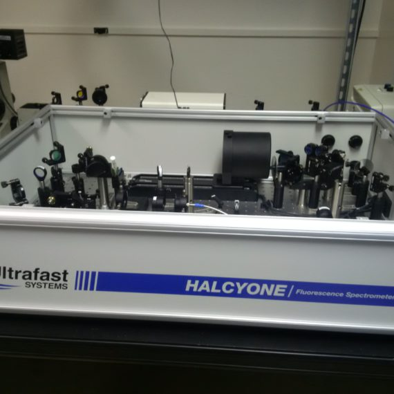
Ultrafast fluorescence lifetime measurement system
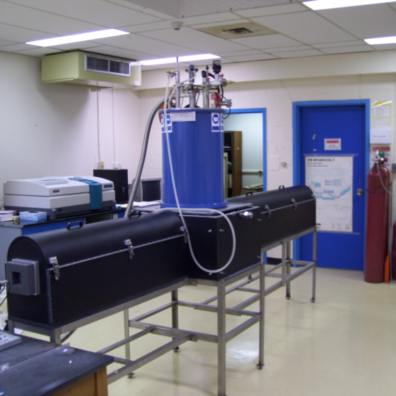
Magnetic circular dichroism system
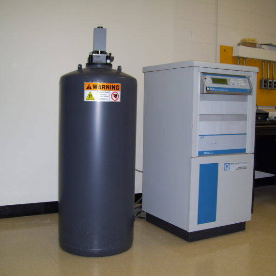
Physical Property Measurement System (PPMS)
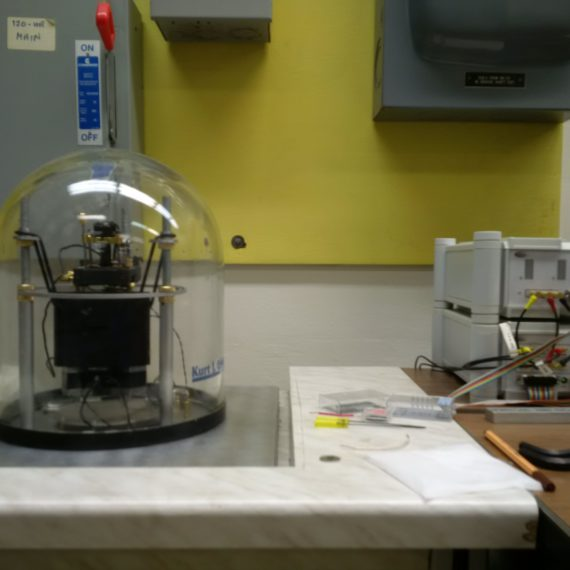
Atomic force microscope (AFM)
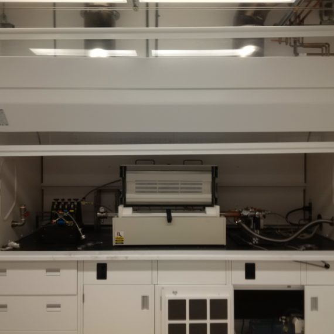
Chemical vapor deposition (CVD) system 1
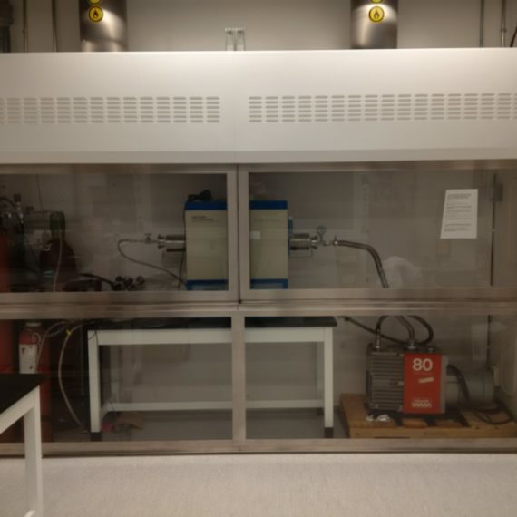
Chemical vapor deposition (CVD) system 2